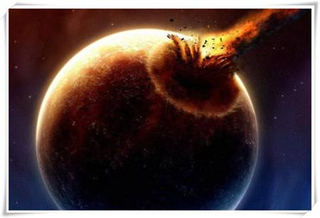
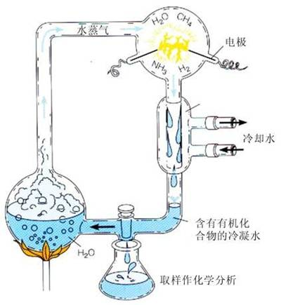
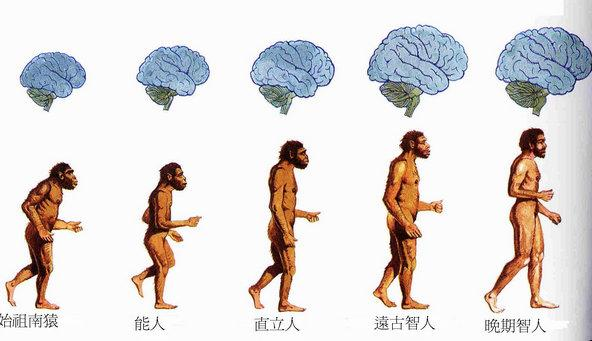
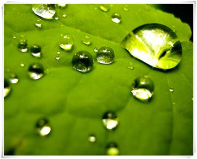
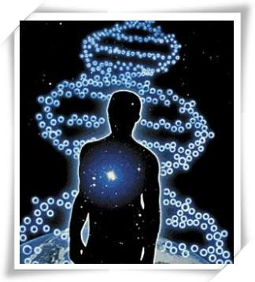
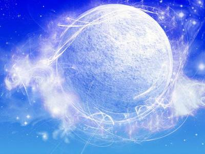

地球生物的起源
神秘的生命起源
在我们居住的这个美丽的浅蓝色星球上，20万种左右的微生物，30多万种植物和100多万种动物，那么人们不禁要问，如此丰富多样的生物最初是从哪里来的呢？
细菌、真菌、病毒、动物和人类都是有生命的，属于生物．现在地球上已知的生物有200多万种，其中植物约30多万种，动物约有150多万种，动物中的节肢动物就有100多万种．节肢动物是动物界中最大的一门．微生物包括细菌、病毒、真菌、放线菌、立克次体、支原体、衣原体、螺旋体。
科学家研究发现，今天我们地球上的生物，无论大小，都是由细胞组成的，细胞里与生命活动有关的主要是一些结构复杂的生物分子，这些生物分子是怎样起源的呢？故事得从地球的诞生讲起。
那是在大约50亿年前，宇宙中一团弥漫的缓缓转动的气体尘埃云形成了原始太阳系。到了47亿年前，原始太阳系里一些气体尘埃云又凝聚形成了最初的地球。刚刚诞生的地球十分寒冷、荒凉，没有结构复杂的物质，当然也不会有生命。生命是随着原始大气的诞生开始孕育的。
在早期太阳系里，一些处于原始状态的天体频繁的和幼小的地球相撞，这一方面增大了地球体积，另一方面运动的能量转化为热能贮存在了地球内部。撞击不断地发生，地球内部蓄积了大量热能。地球的平均温度高达摄氏几千度，内部的金属和矿物变成了融融的炽热岩浆（至今还仍然保留着）。岩浆在地球内部剧烈运动着，不时冲出地球表面形成火山爆发。在原始地球上，火山爆发十分频繁。随着火山爆发，地球内部一些气体被源源不断地释放出来，形成了原始大气。这时的地球上仍然没有生物分子。
在以后的岁月里，由于日积月累，原始大气中的水蒸气越来越多，地球表面温度开始降低。当降低到水的沸点以下时，水蒸气就化作倾盆大雨降落到了地面上。倾盆大雨不分昼夜地下着，形成了最初的海洋，这为生命的诞生准备了摇篮。
那时地球表面的温度仍然很高，到了大约36亿年前，海水的温度已降为80℃左右，然而在此之前，原始生命就已悄悄孕育了。
生命的诞生与原始大气十分有缘。据推测，原始大气的主要成份是一氧化碳、二氧化碳、甲烷、水蒸气、氨气。这些简单的气体分子要想成为生物分子，就必须变得足够复杂。合成复杂物质是需要消耗能量的。
值得庆幸的是，在原始地球上有各种形式的能量可供利用。首先，原始大气没有臭氧层，阳光中的紫外线可以毫无顾忌地进入大气，这为地球带来了能量。其次，原始大气中会出现闪电，闪电是一种能量释放现象。再次，原始地球上火山活动频繁，火山喷发可以释放大量热量。
简单的气体分子在吸收了能量之后，它们会变得异常地活泼，进而产生化学反应，形成复杂的(生命)物质。美国的科学家米勒是第一位模拟原始地球的大气的条件，成功地合成出复杂（生命）物质的科学家。
生命怎样诞生
米勒设计了一套玻璃仪器装置。球形的玻璃容器里模拟的是原始地球的大气，主要有氢气、甲烷和氨气。在实验过程中，需要把烧瓶里的水煮沸，这模拟的是原始海洋里的蒸发现象。球形的电火花室里外接有高频线圈，使电极可以连续火花放电，这模拟的是原始地球大气中的放电现象。放电进行了一周，让米勒惊喜的是，实验中产生了多种氨基酸。
氨基酸和核苷酸是动植物体内普遍存在和最最重要的两种生物小分子，它们是建造生命大厦的砖块和石头。

由不是生物体基本结构单元的无机小分子演变为生物小分子，这无疑是生命进化过程中至关重要的一步，但是，由于生物小分子毕竟过于简单，只有它们演变成更为复杂的生物大分子之后，才能导致生命的诞生。
在原始地球上，自然合成的氨基酸和核苷酸随雨水汇集到湖泊海洋里。矿物粘土把这些生物小分子吸附到自己周围，在铜、锌、钠、镁等金属离子催化下，许多氨基酸分子通过脱去0水分子而连接在一起，形成更为复杂的分子，也就是蛋白质分子。同样，许多核苷酸分子可以通过脱去水分子而连接在一起，形成更为复杂的分子，也就是核酸分子。
核酸是生物的遗传物质，生物体生长、繁殖、行为和新陈代谢的信息就包含在核酸分子里核苷酸的排列顺序中，可以说，每一种核苷酸排列顺序都是一篇记录着生命信息的文章，书写的文字就是核苷酸。核酸是生命的信息分子，对于生命是绝对重要的。然而核酸的功能却是通过蛋白质来实现的，就连核酸本身的复制都需要蛋白质参与。
原始地球的湖泊海洋里出现了核酸和蛋白质以后，也许有人认为生命从此就诞生了，因为自然界中一些病毒就是由核酸和蛋白质组成的，而类病毒就更是简单得可怜，只是一个核酸分子，这个核酸分子能侵入植物细胞并使植物得病，马铃薯纺锤状块茎病就是这种类病毒感染的结果。
病毒和类病毒只能在活细胞内生存繁殖，至于是不是一种生命形式，目前还存在着很多的争议。
生物为了适应环境，在进化过程中，它必须从简单到复杂、从低级到高级这样一个过程当中进行演化，而一个简单的分子，在传宗接代过程中是无能为力把其它物质聚集在自己周围的，它必须形成具有一定结构的复杂形态的实体。
在原始海洋里，随着时间推移，自然合成的生物大分子浓度越来越高，最终形成了具有一定形态结构的分子实体，并进一步进化为最原始的生命。
遗传物质的进化
众所周知，核酸是当今地球上所有生物的遗传物质，它携带着生命信息，又能自我复制。核酸有两种：一种是核糖核酸，又叫RNA，在RNA病毒和类病毒中，RNA携带着全部生命信息；另一种是脱氧核糖核酸，又叫DNA，它是目前绝大多数生物的遗传物质。

种种迹象表明，原始地球上首先出现的复杂分子可能是RNA，为什么这样说呢？
首先，RNA分子比较简单，只有一条链，DNA分子却很复杂，有两条链，按照进化规律，简单的分子总是最先出现。其次，DNA分子自我复制时离不开酶，酶的本质是蛋白质，在原始地球上，在蛋白质没有产生以前，DNA分子是无法完成自我复制的，然而有些RNA分子本身就有酶的活性，在原始地球条件下，即使没有蛋白质，RNA也可以完成自我复制。
在生命起源中，RNA先发生的学说能够被科学界更多的学者所接受，但是要想真正地证明RNA是最早发生的遗传物质，还存在很多的问题，最大的问题是，要想在模拟原始的条件下合成RNA非常困难。
长期以来，人们总以为只有核酸才是遗传物质，近年来生物学家发现，疯牛病、疯羊病的病原体是朊病毒，朊病毒的本质是蛋白质，可以自我复制，这启发人们，蛋白质也可以作为遗传物质。

其实，和核酸一样，蛋白质的分子结构十分规则，而且也有螺旋结构。科学家长期研究后发现，蛋白质完全具备遗传物质的条件，能够贮藏、复制和传递生命信息。
我们知道，蛋白质是由氨基酸组成的，通过氨基酸和氨基酸配对，可以把遗传信息传递给下一代。
在原始地球上，最早能够进行自我复制的分子可能是蛋白质，那时的蛋白质既能贮存或传递遗传信息，又能执行特定的生物学功能。
对于原始生命来说，蛋白质的这种性质是十分经济的，后来随着生命进化，蛋白质贮存或传递遗传信息的功能交给了RNA，然而RNA不够稳定，随着生命继续进化，又出现了DNA，DNA是后来才出现的遗传物质。
DNA作为遗传物质的好处是：第一，DNA的某些部位与RNA相比，少了氧原子，氧原子是非常活泼的，这样DNA更加稳定，能够更好地保存生命信息，第二，RNA是单链，如果受到损伤，生命的信息势必丢失，DNA则是双链，一条链发生损伤后，可以根据另一条链进行修复，生命信息不易丢失。
因而，今天地球上的生命选择了DNA作为遗传物质，这也是生物在自然界中长期进化的结果。
生命何时、何处、特别是怎样起源的问题，是现代自然科学尚未完全解决的重大问题，是人们关注和争论的焦点。历史上对这个问题也存在着多种臆测和假说，并有很多争议。随着认识的不断深入和各种不同的证据的发现，人们对生命起源的问题有了更深入的研究。
关于地球生命起源的另外几种假说
1.自然发生论

古时候人们对自然的认识能力较低，但已能进行抽象的思维活动，根据自然现象做出了“生命是自然而然发生”的结论，队为生物可以从非生命的物质直接产生。其代表思想有中国古代的“肉腐生蛆，鱼枯生蠹”，亚里土多德的“有些鱼由淤泥及沙砾发育而成”等，将生命解释成可以随时随地自然发生。
2.神创论

神创论者队为生命是由超物质力量的神所创造的，或者是一种超越物质的先知所决定的，即认为地球上的各种生物，都是由上帝按照一定计划、一定目的创造出来的。这是人类在认识自然的能力很低的情况下产生出来的一种错误的原始观念，后来又被社会化了的意识形态有意或无意地利用，致使崇尚精神绝对至上的人坚信神创论。
3.化学起源论

化学起源论者主张从物质的运动变化规律来研究生命的起源，认为在原始地球条件下，无机物可以转变为有机物，有机物可以发展为生物大分子和多分子体系直到最后出现原始的生命体。1924年，前苏联学者奥巴林首先提出了这种看法，5年后英国学者J．B．s霍尔丹也发表过类似的观点。他们都认为地球上的生命是由非生命物质经过长期演化而来的，这一过程被称为化学进化，有别于生物体出现以后的生物进化。1936年出版的奥巴林的《地球上生命的起源》一书，是世界上第一部全面论述生命起源问题的专著。他认为，原始地球上元游离氧的还原性大气在短波紫外线等能源作用能生成简单有机物(生物小分子)，简单有机物可生成复杂有机物(生物大分子)并且在原始海洋中形成多分子体系的团聚体，后者经过长期的演变和“自然选择”，终于出现了原始生命即原生体。化学进化论的实验证据越来越多地为绝大多数科学家所接受。
4.宇宙发生说

这一假说认为，地球上最早的生命或构成生命的有机物，来自于其它宇宙星球或星际尘埃。持这种假说的学者认为，某些微生物孢子可以附着在星际尘埃颗粒上而落入地球，从而使地球有了初始的生命。
从古至今，有很多说法来解释生命起源的问题。如西方的创世说，中国的盘古开天地说等。但直到十九世纪，伴随着达尔文《物种起源》一书的问世，生物科学发生了前所未有的大变革，同时也为人类揭示生命起源这一千古之谜带来了一丝曙光，这就是现代的化学进化论。